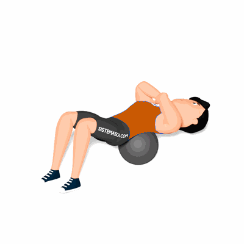

Abdominal Curto no Medicine Ball

O exercício tem como objetivo definir os músculos da região do abdome. Outro benefício é o fortalecimento dos músculos do tronco, prevenindo problemas na coluna.
Ficha Técnica
Tipo: Funcional
Grupo Muscular: Abdome
Aparelho: Nenhum
Músculos: Nenhum
Como realizar
- Deite sobre o Medicine Ball de forma que seus pés fiquem firmes ao chão;
- Deixe que a parte final de sua coluna fique no ápice da bola;
- Os pés e os joelhos devem fazer um ângulo de 90 graus;
- Levante seu peito juntamente com o torso, até chegarem ao nível de seu estômago;
- Retorne à posição inicial e repita os movimentos.
 RC STORE
RC STORE